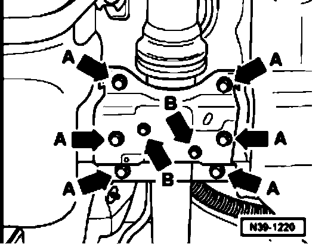
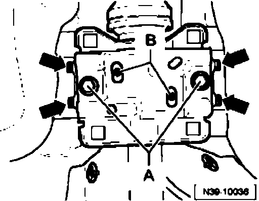
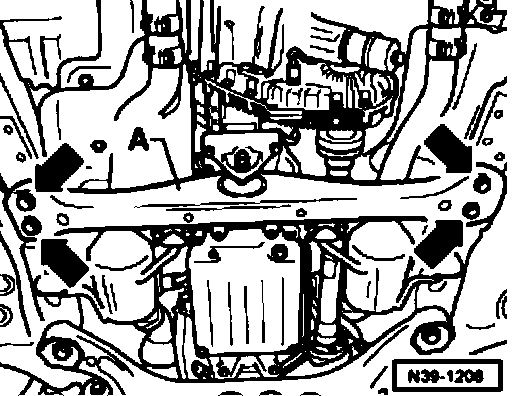
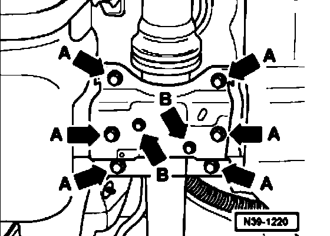

Procedures
Rear driveshaft center bearing, installing free of stress
- If necessary, remove rear section of exhaust system.

- Remove bolts (arrows -B-).
- Loosen bolts (arrows -A-) a few turns.

- Straighten bracket for center bearing so that stop pins on body are centered in openings (arrows).
- Fasten bracket in position with two mounting bolts -A-.
- Check that threaded holes for center bearing -B- line up with elongated holes in bracket.
With slight divergence
- Shift bearing bracket in a lateral direction to line up elongated holes.
Additionally, ensure that center bearing is not in contact with the body (driveshaft tunnel).
With large divergence or center bearing contact with body

- Loosen bolts (arrows) for transmission support -A- approximately 3 turns.
- Shift transmission support laterally until threaded holes for center bearing line up with elongated holes in bracket.
Additionally, ensure that center bearing is not in contact with the body (driveshaft tunnel).
Continuation
- Replace transmission support bolts one at a time and torque to specification.

- Insert bolts (arrows -B-) and then insert and tighten bolts (arrows -A-) and tighten bolts (arrows -B-).
- If necessary, install rear section of exhaust system.
Tightening torques
Bracket for center bearing to body 60 Nm
Rear driveshaft center bearing to bracket 20 Nm
Transmission support to body (replace bolts) 50 Nm + 90°